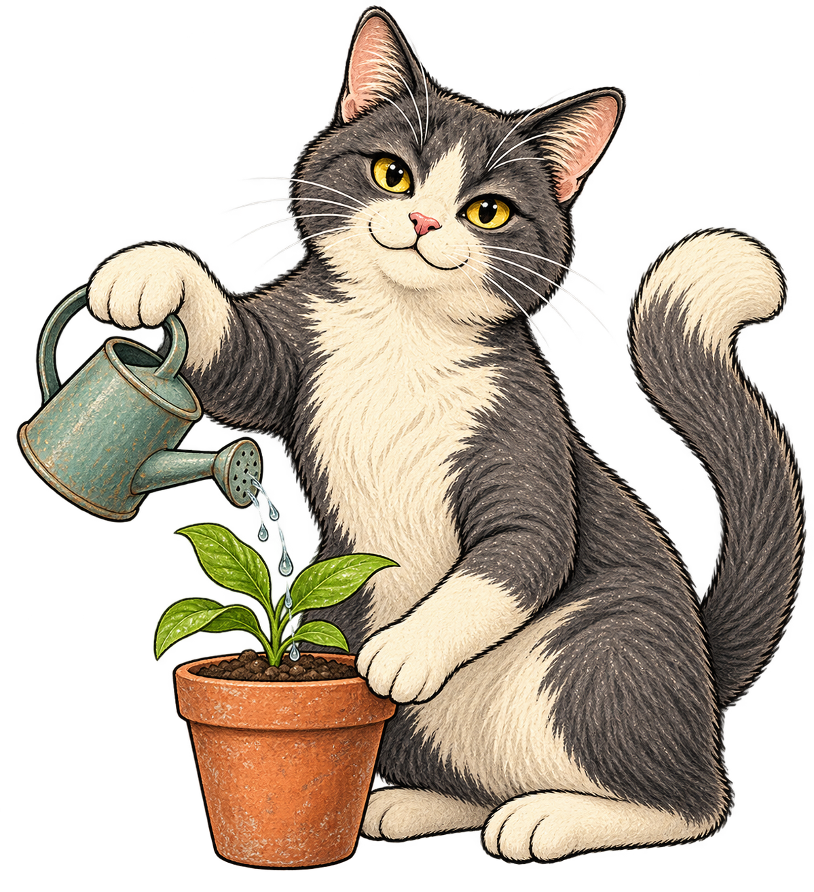

CITY MAKERS' FIELD NOTES
どの猫にも、
入りやすい入口を。
回答の集計と100匹の基準猫を重ねて、まちで試す仕掛けを考える。
またたび、ちゅーる、キャットタワー。ひとつの誘い方でなくていい。

MAP＋ DATA
ONE CAT, ONE ROW / OPEN DATA
集まった猫が、1匹ずつCSVに。
公開に同意した猫を、1匹1行のオープンデータとして公開します。
猫の種類・設計座標・回答の配分・参加したくなる入口を、再利用できます。
CC BY 4.0 / 1匹から公開 / 登録不要
共有の集計を確認しています。
WHERE TO START?
分布を見て、次の実験を。
地図を押すかスライダーでゾーンを選べます。小さな猫は元データの100類型、大きな丸は公開された回答集計です。X/Yは作品の設計座標です。基準猫の毛並みは番号ごとのイラスト表現です。
活動したい地域として選ばれた、約1km四方のメッシュの中心です。回答者の居場所ではありません。地域を選ばなかった回答は、この地図には出しません。
基準猫 回答集計 選択ゾーン
小さく試して、反応を確かめる。
提案は元の設計データに基づく仮説です。効果が実証された処方ではありません。
YOUR LITTLE STEP, OUR NEXT IDEA
きょうの一歩を、
まちづくりのヒントに。
送るかどうかは自由です。氏名・ニックネーム・GPS・番地は集めません。任意の地域、5つの問いの配分、参加したくなる入口を、匿名で保存します。
猫CSVは1匹から公開。地域別の集計は同じ月・地域・イベント・ゾーンで5件以上から公開します。人数の推定や、住民全体を代表する調査ではありません。
ONE CAT, ONE ROW / OPEN DATA
集まった猫を、CSVで公開しています。
Googleスプレッドシートに保存され、公開に同意した猫が1匹1行で反映されます。公開番号・参照する猫の種類・設計座標・5問の配分・選んだ入口を取得できます。
ファイル名：ieneko-cats.csv
このURLはGASが保存済みの公開猫からCSVを生成します。プログラムなどからログイン不要で取得できます。ブラウザーで保存する場合は上のボタンを使ってください。
猫は1匹から公開されます。氏名・ニックネーム・保存用ID・日時・地域・イベント・位置情報は含めません。以前の「集計だけの公開」への同意で保存された回答は、猫単位では公開しません。
公開された猫を確認しています。
利用条件：CC BY 4.0 ↗（出典を示して再利用できます）
出典表記：2026年度東京大学シビックテックデザイン学講座Team 1
猫CSVの項目を確認する（データ辞書）↗
地域ごとの傾向を調べる集計CSV
地域・月・イベント・ゾーンごとに5件以上ある集計です。地域の地図と同じ公開条件で、猫1匹1行のCSVとは別に取得できます。
表示中のデータだけを使う場合
下の保存ボタンには、現在のデータ選択とフィルターが反映されます。サンプルを選んでいるときは、架空のデータであることをファイル内にも明記します。
データ項目・計算方法・限界
回答は3つの選択肢への配分です。各選択肢が参照する元CSVの猫のX/Yを加重平均し、回答した問いの平均を取ります。全保留は中心(5,5)。近い猫を探すための作品の設計で、心理尺度ではありません。
公開単位：月、任意のイベントID・市区町村、任意の0.01度メッシュ、X/Yを2ずつ区切ったゾーン。同じ単位で5件以上の回答のみ公開。回答の重複・自己選択・地域やイベントによる偏りを含み、母集団の人数や割合は推定しません。
CSVのq1_a〜q5_cは答えの平均配分、q1_n〜q5_nは保留を除く回答件数。matatabi_n・churu_n・tower_nは選択件数、support_nはこの質問で1つ以上選んだ件数。複数選択のため割合の合計は100%を超えます。
集計のライセンス：CC BY 4.0。表示する100匹の基準猫と出典文献の利用条件は別です。
集計JSONの公開API ↗ データ辞書を開く ↗ 研究とデータの根拠 ↗